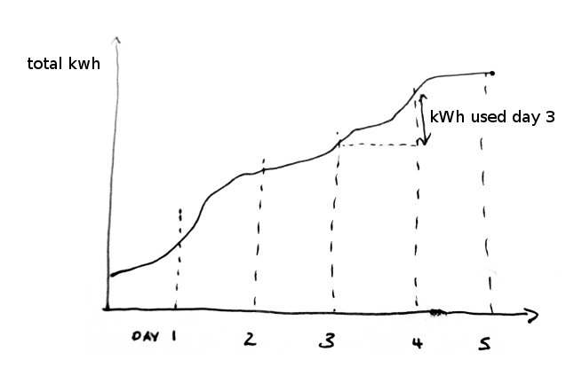

I started writing this post a while back before I started working on the idea, please excuse the change of 'tense' from prospective feature to mostly implemented feature.
I've been thinking about the way the OEM system should calculate energy: watt hours, kWh or totals, total pulse count, total litres of water consumed or m3 of gas and how to improve the systems measurement reliability for these measurements. I came to analyse my monitoring data earlier in January and realised there was quite a discrepancy between my billing meter and my emoncms data which was caused by a series of rfm12b lock ups due to old firmware and my ongoing live development on my home system.
The current approach is to calculate power on the emontx and send that to emoncms which then via the power_to_kwhd input processor calculates daily kwh figures, or more recently kwh per day can be calculated from the daily average power as calculated with the timestore averaging approach.
The problem is that any gap in the data can cause large errors and there are quite a few links in the system where something could go wrong: the radio link, the internet link if its a remote server, emoncms development stability.
The thought occurred to me that it might be better to calculate energy on the emontx rather than in emoncms (Robert Wall asked this question a long time back here: http://openenergymonitor.org/emon/node/1602)
The emontx could calculate the total accumulated wh since it started monitoring in much the same way as a normal billing meter does.
The total accumulated watt hours could then be sent to emoncms and logged as an ever accumulating watt hour feed stored using the fixed interval feed engine approach which would then make picking out the total all time kwh value at the end of each day and subtracting it from the day before sufficiently efficient and fast, you could also pick out hourly totals in this way or any other time division, monthly, annual and timezones can be corrected by just shifting the query intervals by the required hours. This may also offer a way to do time of day billing.

The reason fixed interval storage engines make this approach fast enough to be useful is that: say the wh total is updated every 10 seconds then to extract daily values you just need to seek every 8640 datapoints in the data file starting from a datapoint corresponding to midnight on the first day. Seeking to a specific file location like this is really fast.
This is a big change to the way the system has worked to date but I think its worth it for the additional measurement reliability/accuracy. It involves changes to emontx firmware and large changes to emoncms. There's also an interesting topic about saving kwh total data to emontx EEPROM which I will come back too later to which Robin Emley has given me a lot of help.
Emoncms development
This is behind a lot of the recent development to emoncms including the nodes interface that allows the sending of the long datatype to emoncms, emoncms needs to be able to receive variables with the long datatype via the raspberrypi interface to allow watt hour values greater than 32,767. The PHPFiwa feed engine was designed to make the above approach of daily kwh data calculation possible.
Emoncms development forum post
http://openenergymonitor.org/emon/node/3868
Emoncms rework development branch
https://github.com/emoncms/emoncms/tree/rework
EmonTx Firmware development
I've also added a new firmware example based on Robin Emley's continuous sampling emontx firmware that include wh total calculation.
https://github.com/openenergymonitor/emonTxFirmware/blob/master/emonTxV3...
It still needs a bit of work to complete, its now at the final polishing and testing stage, A fair bit of documentation work is also needed, but its getting there.
I now have my home system running with the above firmware and the emoncms rework development branch. The new version of emoncms also comes with a mobile friendly dashboard that gets its kwh/d data in the way described above.

Im really pleased with this, its both nice having the information on the mobile and I like the peace of mind of knowing that brief outages to the raspberrypi wont effect my long term kwh measurements.
Re: Development: Calculating Wh totals on the emontx
This means that the total kWh has to be stored in EmonTx Eeprom. What happens if the Emontx hardware needs to be replaced?
Re: Development: Calculating Wh totals on the emontx
An alternative or complimentary approach would be to make the transport layer more robust.
My gas counter emonTH submits the number of pulses since it last received an ACK from the Pi. This means I can take the Pi offline for maintenance for a few hours, and when I plug it back in it receives a packet from the emonTH with the full count of gas used in that time.
If the Pi loses internet connectivity it won't be able to deliver any packets received during that period, however. In my setup these are just lost. If we had a reliable way to queue the transmissions if the Pi can't connect to the remote server, and then submit them at a later date, it would close off this weakness.
The emonTX could calculate the energy used between transmissions, but reset the count on a successful submission to the Pi.
It doesn't address the issue of "emonCMS stability" per se, but I think if that's important then the upgrade path on a Pi would be to bring emonCMS out of service in a controlled way (the Pi will then start queuing the packets received as described above) then when you bring emonCMS back up, it will process the queue.
Re: Development: Calculating Wh totals on the emontx
JBecker, Paul Allen added an input processor to emoncms a while back that if the emontx is reset , let's say we're not using eeprom, or changing hardware and totals are reset, then emoncms will continue from the last value, it just works out the difference between total pulse counts and rebuilds its own accumulated value, it's not clear yet that the eeprom idea will work so this might need to be the approach.
Schism, I agree we should add in these kind of checks where we can and certainly buffering on the pi.
Re: Development: Calculating Wh totals on the emontx
OK.
Is there a problem with storing the data in EEPROM?
Re: Development: Calculating Wh totals on the emontx
Schism: to add, thats really cool that you've added an ACK from the PI to the emonTH, its I wonder if there is an advantage to adding this in addition to sending an ever accumulating pulse count? I guess sending an ever accumulating pulse count and having emoncms deal with resets (Paul Allen's solution) allows for packet loss on the raspberrypi.
Re: Development: Calculating Wh totals on the emontx
JBecker, Yes to elaborate on saving to EEPROM, Im sure you know all of this as you where involved in the previous discussion on this, so this is more for everyone's benefit,
The appealing benefit of storing the total since installed (or last manually reset -via EEPROM erase) in the EEPROM is that you have that total accumulated watt hour value that is easily compared with your billing meter. Its also a little more robust than not storing in EEPROM as in the admittedly not that likely situation where your raspberrypi is down and the emontx resets once, counts say 10 kWh of energy use then resets again (maybe a second power cut) without having had coms with the pi in the mean time. Without storage in EEPROM that 10 kWh measurement would be lost. Its an unlikely case though.
The problem with storing accumulated watt hours, pulse counts etc in EEPROM is that EEPROM has a limited number of writes (100,000 http://arduino.cc/en/Reference/EEPROMWrite) if the designed lifetime is 25 years the number of writes per day to the same 'cell' would need to be just below 11 or one write every 2 hours and 10 mins.
The other problem is that there is a possibility of data corruption if a write does not complete, if the power fails half way through a write, this then leaves you with garbled wh values which would mess up all your readings.
Looking back through the OEM forum posts I came across the discussion I linked above involving Robert Wall, MartinR, JBecker and Fluppie on this topic of calculating kwh data on the emontx and saving to EEPROM http://openenergymonitor.org/emon/node/1602
MartinR outlines a neat idea for detecting the loss of AC Power to the emontx and saving the elapsed kWh to EEPROM in the short time that is available after AC power is lost and there's still enough power in the capacitors., this would be one approach to getting around the limited number of writes problem.
The other approach would be to implement wear leveling This article mentions that it could be possible to implement wear leveling to improve the max number of writes by a factor of 100 http://www.mosaic-industries.com/embedded-systems/sbc-single-board-computers/freescale-hcs12-9s12-c-language/instrument-control/eeprom-lifetime-reliability-wear-leveling
Investigating the possibility of writing to EEPROM on power failure.
Here's a similar Digital Oscilloscope capture to MartinR's of what happens when the emontx v3 loses power supplied by the ACAC Adapter. There is about 56ms available with the current hardware.
A couple of weeks ago I discussed this idea with Robin Emley as it would be good if the base for the emonTxFirmware is his continuous monitoring firmware for its higher accuracy. Robin very kindly looked into how it would be possible to add AC Failure detection to his continuous monitoring code and created example code of AC Failure detection working, the example can be found here:
https://github.com/openenergymonitor/emonTxFirmware/tree/master/emonTxV3/RFM12B/Examples/voltageFailureDetector
I then merged the AC Failure code with Robin's Continuous Sampling code and added in calculation of watt hours elapsed and EEPROM saving.
https://github.com/openenergymonitor/emonTxFirmware/tree/master/emonTxV3...
Thats about as far as we got, it would save the first and sometimes the second watt hour total out of four for all four CT's. If the AC detection takes around 10ms (half a cycle) then that would leave us with 46ms, if each byte takes 3.3ms and a long uses 4 bytes then we should be able to save 3.4 long values so it seems that there's not enough for all 4 values anyway without maybe a larger capacitor on the emotx to give us more time.. or Glyn suggested the possibility of turning the ADC off to save power which could be something to look into.
Id say this approach needs a fair bit more work, maybe a good long term development question to investigate but Im leaning towards just sending watt hour accumulated since last reset with Paul Allen's solution that detects a reset in emoncms, correcting for it there in the short term.
Re: Development: Calculating Wh totals on the emontx
I often think it would be an idea to look at the structure of the packets and what is in them. I realise that keeping the packets short is important for battery life, but would adding a couple more bytes (for sequence number, and probably packet type) make a huge difference? The packet is already 9 bytes of RF12 overhead + 4 bytes (temp, temp, humidity, battery).
If you added a field that contained node/packet type and sensors, you could reduce the size even:
9 bytes overhead + 1 byte type + 1 byte temp (for a normal DS18B20 node)
then you could skip the external sensor and humidity, and also only send the battery periodically (you don't need to send this each and every time really?), by using another type:
9 bytes overhead + 1 byte type + 1 byte temp + 1 byte battery
Re: Development: Calculating Wh totals on the emontx
Cybergibbons, this topic could go off in many directions, it might be best if we discuss significant changes to packet structure in an other thread, I think the new nodes interface with the standard node decoders for the different emontx sketches goes a long way to solving the problem of not knowing what the inputs where but yes this is a large topic.
Re: Development: Calculating Wh totals on the emontx
Im sure you know all of this as you where involved.....
Sorry, forgot about it ( I'm getting old..).
The power failure detection is a good idea, but as it might need hardware mods, possibly not the best solution.
Are there any drawbacks with Pauls method you mentioned?
If you have 4 longs to save, this means 16 bytes. The easiest way to provide a sort of wear leveling is to store these 16 bytes in a circular buffer with e.g. 256 bytes. This means that the number of writes is increased by a factor of 16. To be able to find the last data written before a reset, the 'next' buffer position has to be erased (completely). I am not sure if this counts as an extra 'write' cycle. If yes, then this would reduce the number of writes gained to a factor of 8. Taking your calculations above, this would mean that new data could be written every ~15 minutes (with a 25 year design lifetime).
Another idea would be to store only integer kWh readings. Means a new value is saved when one complete kWh is accumulated. In the worst case you would then 'loose' 3 kWh on a reset. Number of writes would then be ~10-20/day for a normal household.
Re: Development: Calculating Wh totals on the emontx
That's a great idea. A simple way to tolerate power cuts is then suggested: when the emonTX boots, it looks for the highest value in the extended buffer which is 1 more than the next highest value. It's unlikely that a corrupt write would result in writing +1kWh (indeed, by definition that wouldn't be corrupt), and any other value of an individual buffer element will not be selected by this algorithm.
The emonTX now starts summing energy use using this value as a start point.
Doing this for time-based recording to EEPROM has no guarantees, but per-kWh recording puts a top limit of 1kWh on a reset loss.
Re: Development: Calculating Wh totals on the emontx
That's a great idea.
:-) 'GREAT' is a bit too much.
I have some products where the ATmega is also doing the RTC functionality. There I save the 'hour' information in EEPROM every full hour (means 1 write operation every hour). The minutes and seconds are only held in RAM, but in the 'no-init' section (means that they are not initialized after reset). The 'hour' variable is also in this section.
After a reset (which can be a watchdog reset or a brown out reset or a power-on reset or whatever), I compare the 'hour' information with the last value stored in EEPROM. If they are equal, the probability is high, that the 'minute' and 'second' information was also 'preserved' during this reset and I just keep on working with these values (if the values are in the normal range). If the 'hour' information is not equal, I reset the minute and second to zero only if they are not in the 'allowed' range (after a complete power down they should be either 0 or 0xFF). Does this make sense?
Re: Development: Calculating Wh totals on the emontx
I like the idea of the counter reset after the ACK (but what happens if the ACK is sent but not received ? we expect a reset counter but it is not).
I didn't get the time to pay a look at Paul's implementation, but in the one I committed after a discussion with Robert, the post processing function detects if the counter has wrapped around or was reset. This need a hardcoded parameter depending on the expected energy rate (i.e. depending on the meter). And this is not absolutely safe: if the counter is reset just as it was about to wrap around, there is no way to know. The ACK way is nice because it makes sure we're always far from wrapping around.
Re: Development: Calculating Wh totals on the emontx
(but what happens if the ACK is sent but not received ? we expect a reset counter but it is not)
In this case the node will retry a certain number of times. The emonBase should be set up to ACK, but then discard, duplicate packets. On my to do list.
Re: Development: Calculating Wh totals on the emontx
Submitted by TrystanLea on Tue, 04/03/2014 - 09:20.
JBecker, Paul Allen added an input processor to emoncms a while back that if the emontx is reset , let's say we're not using eeprom, or changing hardware and totals are reset, then emoncms will continue from the last value, it just works out the difference between total pulse counts and rebuilds its own accumulated value, it's not clear yet that the eeprom idea will work so this might need to be the approach.
Which input processor is that? Is it total pulse count to pulse increment, accumulator, or something else?
Re: Development: Calculating Wh totals on the emontx
Independent of calculating Wh totals on the emontx, keep old processors available.
I suspect that posting accumulative data at different intervals (due to network down) may need testing on the visualization side because as i remember current php code expects data to be equaly spaced.